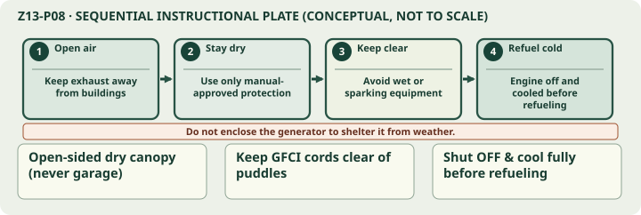

Z13-P08 · Home survival and utilities · New manuscript
Protect outdoor generators from wet weather and refuel only when cool
Prevent electrocution in rain/snow and flash fuel-vapor fires during multi-day storm generator runs.
When it applies · Running and refueling portable generators outdoors during rain, sleet, snowstorms, or night outages.
Equipment · Approved open-sided generator weather canopy/tent, dry level surface, approved safety fuel can, and fire extinguisher.

Actions
- Keep a portable generator outdoors at the prescribed clearances, with exhaust pointed away from buildings. Use only equipment and weather protection the manufacturer permits in those conditions. Leave it off if it cannot stay dry without enclosing it.[U15, U02]
- Keep hands dry, maintain active GFCI protection on outdoor cords, keep cords out of standing puddles/snowmelt, and inspect cords for cuts before plugging in.[U15, U02]
- Turn the generator completely OFF and allow the engine and muffler to COOL completely before opening the fuel cap or refueling—gasoline spilled onto a hot exhaust ignites explosively in seconds.[U15, C15]
Failure recognition · Pouring gasoline from a jerrycan into a hot running generator in the dark to avoid interrupting the refrigerator, igniting a flash vapor fire.[U15, C15]
Verify · Confirm dry level open-air placement, intact GFCI cords clear of puddles, and engine completely shut off and cooled prior to fueling.[U15, C15]
Stop or change course · Keep away from wet or sparking equipment and leaking fuel. If exhaust enters a building or a CO alarm sounds, evacuate and call 911 before any equipment action.[U15, C07]
Evidence and editorial notes
- C07 · CPSC · Carbon Monoxide Fact Sheet (current web edition)
- Section: CO poisoning symptoms; what to do if suspected · Conditions: Suspected carbon monoxide exposure
Support: Escape to fresh air immediately and contact emergency services. Symptoms can include headache, dizziness, nausea and confusion.
Limitations: CO is colorless and odorless; symptoms mimic viral illness or altitude fatigue and can incapacitate sleepers without waking. · Conflicting evidence: None; aligns with CDC-CO.
Editorial note: Standard CO emergency stop condition across Z02 and Z03. · Specialist reviewer: Carbon monoxide safety and emergency medicine
Primary source · checked 2026-11-24 - C15 · NPS · Wildland Fire Safety (current web edition)
- Section: Wildland Fire Safety > Campfires and Stoves · Conditions: Outdoor cooking with portable liquid or canister stoves
Support: Operate stoves on level cleared ground away from tents and dry fuels, cool completely before refueling, and move away from any spilled fuel before lighting.
Limitations: Fuel canisters behave differently in cold weather and high elevation; follow manufacturer limits. · Conflicting evidence: None; aligns with CPSC-C and USFS-FIRE.
Editorial note: Governs stove setup, refueling isolation, and spill failure recognition. · Specialist reviewer: Portable appliance safety and fire prevention
Primary source · checked 2026-11-24 - U02 · CPSC · CPSC Warns of Generator, Carbon Monoxide and Fire Hazards Ahead of Hurricane Season (2026 seasonal agency guidance)
- Section: Use portable generators outdoors; keep exhaust away · Conditions: Portable generator during household outage
Support: Run outdoors at least 20 feet from buildings and direct exhaust away. Use approved connections as the manual dictates; licensed electrical work governs transfer to a building. Never backfeed.
Limitations: Distance alone does not guarantee safety. Local code and exact equipment determine installation. · Conflicting evidence: See A02 claim audit for boundaries.
Editorial note: Core electrical isolation boundary across Z13 generator cards. · Specialist reviewer: Licensed electrician and fire safety
Primary source · checked 2026-11-24 - U15 · CPSC · CPSC Warns of Generator, Carbon Monoxide and Fire Hazards Ahead of Hurricane Season (2026 seasonal agency guidance)
- Section: Generator fire and carbon monoxide safety; operation and refueling · Conditions: Portable generator in open air, manual and site permit its use
Support: Keep equipment dry and use manufacturer-permitted protection only if it preserves safe outdoor placement. Refuel with the engine off after cooling.
Limitations: No universal canopy or grounding scheme; ask a licensed electrician and keep evacuation ahead of shutdown after possible indoor exhaust exposure. · Conflicting evidence: See A02 claim audit for boundaries.
Editorial note: Covers wet-weather generator enclosures, refueling cooldown, and shock prevention. · Specialist reviewer: Electrical safety and fire prevention
Primary source · checked 2026-11-24
Source lineage · CPSC Generator Safety and FEMA Ready.gov; new manuscript · Classification · New manuscript.